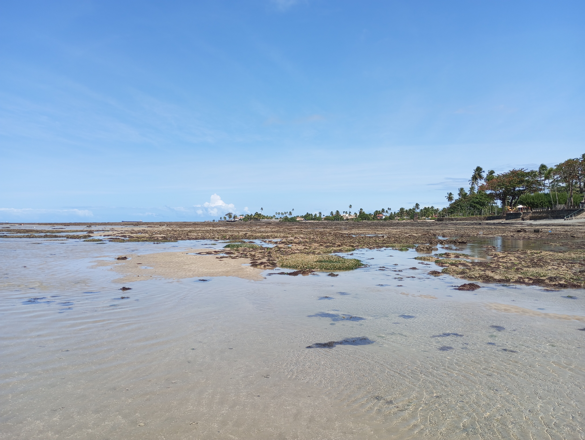
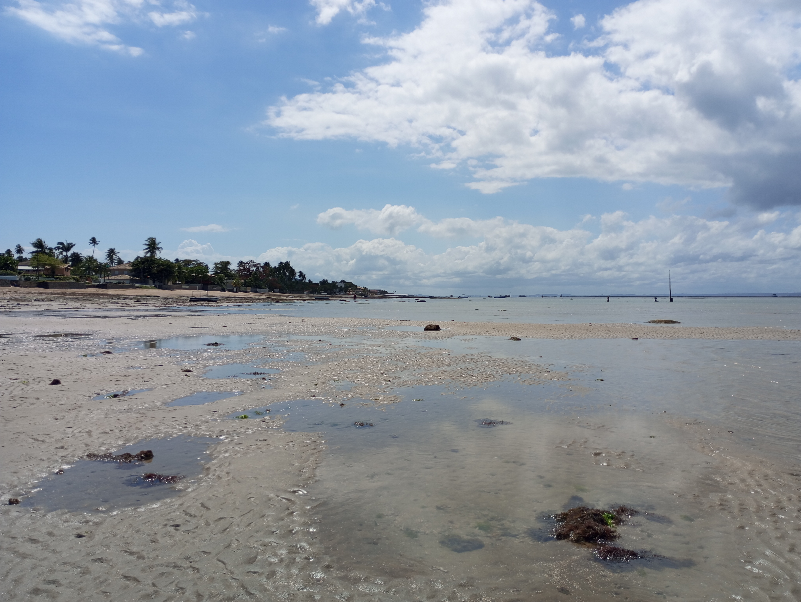
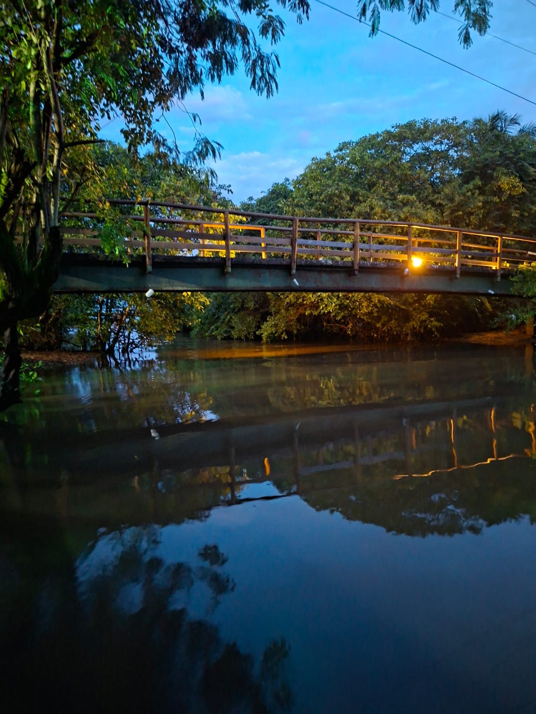
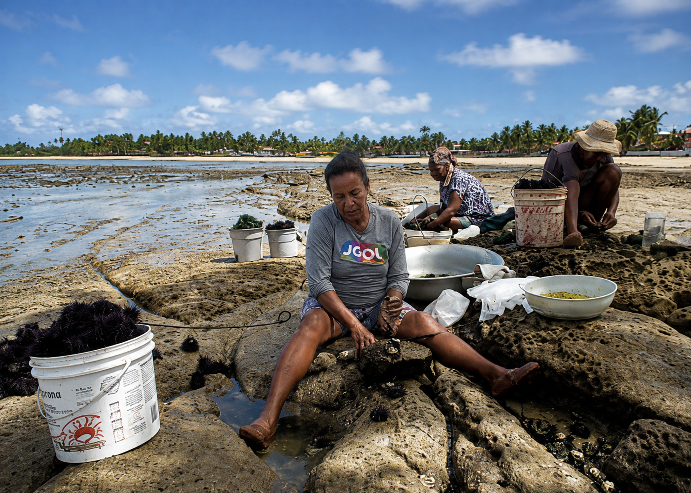
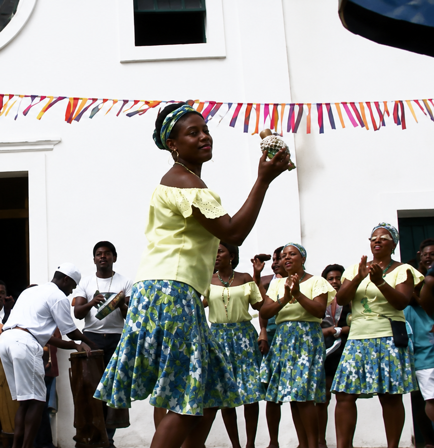
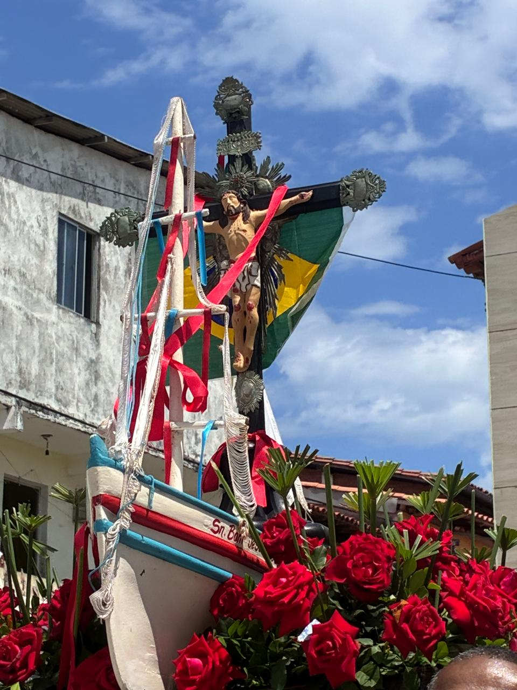

Natureza próximaPraia, recifes, manguezal e trilhas.

Vera Cruz · Bahia
Explore↓
Gamboa
Um território onde a maré revela saberes, a mata guarda caminhos e a cultura segue viva nas mãos, nas vozes e nas memórias da comunidade.
Entre recifes, manguezais e vizinhança
01
02
03
Uma comunidade que se lê pela maré
A Gamboa não cabe em uma única paisagem. Ela aparece na praia tranquila, nas pedras descobertas pela maré baixa, nos caminhos arborizados, no trabalho das marisqueiras e nas rodas em que a música transforma lembrança em presença.
Reconhecida pela relação cotidiana com a pesca e a mariscagem, a comunidade reúne saberes tradicionais, vida coletiva e uma identidade profundamente ligada às águas da Baía de Todos-os-Santos.
Saberes do marPesca, mariscagem e leitura das marés.
Cultura vivaSamba de roda, religiosidade e memória oral.

A maré muda o cenário
O mesmo lugar ganha novas formas ao longo do dia.
A cultura tem ritmo
Palmas, vozes e instrumentos mantêm a memória em movimento.
O território tem moradores
Visitar também significa cuidar, ouvir e reconhecer quem vive aqui.
Trilha do Careca
Um percurso de convivência com a vegetação, as águas do manguezal e os caminhos usados pela comunidade.

01
O encanto está na mata, não na vista para o mar
A Trilha do Careca passa por trechos arborizados e áreas próximas ao manguezal. Ao contrário do que o nome “trilha litorânea” pode sugerir, o percurso não oferece uma vista aberta para o mar. A experiência está na sombra das árvores, no silêncio das águas e na mudança de paisagem ao longo do caminho.
O circuito tem aproximadamente 5,2 km de ida e volta, com nível fácil a moderado. As condições podem mudar com a chuva, a maré e a manutenção do percurso.
5,2 kmaproximadamente
Fácil a moderadadificuldade
Sem vista para o marpaisagem de mata e mangue
Visitação responsável
Use calçado confortável, leve água, evite deixar resíduos e não retire plantas ou animais do ambiente.
Saberes do mar
Mariscagem de pinaúna
Na maré grande, o mar recua e abre uma espécie de sala de aula sobre as pedras.
Depois das luas cheia e nova, grupos de mulheres entram nas piscinas naturais rasas em busca das pinaúnas. Não é preciso mergulhar: o conhecimento do fundo, das pedras e do tempo certo orienta cada movimento.
Na Gamboa, a coleta é uma tradição transmitida por mães e avós. As pinaúnas são preparadas para o consumo e vendidas principalmente à população local, preservando uma relação direta entre quem coleta e quem compra.
Conhecer a maré não é apenas olhar o relógio. É interpretar o céu, a lua, as pedras e a experiência acumulada.

Foto Afonso Santana.Samba de Roda La Plata
Na Gamboa, a memória também bate palma, canta e dança.

PLATA
Um nome que atravessou o mar e entrou na memória
Segundo a memória local, o nome La Plata se relaciona ao naufrágio de um navio argentino no início do século XX. A lembrança foi incorporada à cultura da comunidade e passou a nomear o grupo que guarda uma das expressões mais fortes da Gamboa.
Mais que apresentação, o samba de roda é encontro. Os mais velhos ensinam pelo gesto, os instrumentos conduzem o ritmo e cada roda reafirma o pertencimento ao lugar.
“A praça vira arquivo vivo: o que não está escrito continua sendo lembrado pelo
corpo e pelo som.”


Fé que navega
01
02
03
Procissões, promessas e pertencimento
As celebrações religiosas unem a comunidade, os pescadores e as águas que fazem parte da vida diária.
Missas, tríduos e procissões marítimas e terrestres transformam a fé em encontro coletivo. As embarcações enfeitadas levam devoção pelo mar, enquanto moradores e visitantes acompanham a caminhada em terra.
Essas festas não são apenas eventos no calendário. Elas reforçam vínculos, homenageiam os protetores da comunidade e mantêm vivas histórias transmitidas entre famílias.
Procissão marítimaEmbarcações acompanham a imagem pelas águas.
Caminhada em terraA comunidade ocupa ruas e caminhos em oração.
Festa comunitáriaFé, música e convivência se encontram.
Uma comunidade vista de perto
Água, mata, trabalho, música e fé formam um mosaico que não se resume a uma fotografia.
Conecta Vera Cruz · Memória coletiva
Vozes da Gamboa
Você conhece alguma história, tradição, lenda ou curiosidade sobre a Gamboa? Compartilhe sua lembrança e ajude a preservar a memória da comunidade.
Compartilhe uma memória
Conte algo que você viveu, ouviu dos moradores antigos ou acredita que merece ser lembrado.
Evite divulgar telefone, endereço ou outras informações pessoais.
Mural da comunidade
0 publicações
Memórias compartilhadas
Pesquisa e memória
Fontes da página
Esta página reúne fotografias da comunidade, registros escolares, memória oral e pesquisas sobre as comunidades pesqueiras de Vera Cruz.
- Relatos e fotografias compartilhados pela comunidade e pela Escola Municipal Luís Eduardo Magalhães.
- Pesquisa sobre pesca artesanal e comunidades tradicionais pesqueiras de Vera Cruz.
- Conteúdo produzido e organizado pelo projeto Conecta Vera Cruz.